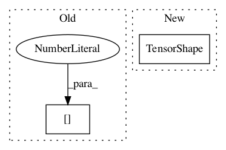

c1db25d9281a9374005d5c8b4e183b8e6d7d2ace,cloud_tpu/models/resnet/estimator_resnet.py,,input_fn,#Any#Any#,193
Before Change
// TODO(xiejw,saeta): Consider removing the sharding dimension below.
images_shape = images.get_shape().as_list()
if images_shape[0] is None:
images_shape[0] = batch_size
images = tf.reshape(
images, images_shape, name="InputPipeline/images/reshape")
labels_shape = labels.get_shape().as_list()
After Change
images.set_shape(images.get_shape().merge_with(
tf.TensorShape([batch_size, None, None, None])))
labels.set_shape(
labels.get_shape().merge_with(tf.TensorShape([batch_size, None])))
images = pipeline_outputs_transform(images)
return images, labels
In pattern: SUPERPATTERN
Frequency: 3
Non-data size: 2
Instances
Project Name: tensorflow/tpu
Commit Name: c1db25d9281a9374005d5c8b4e183b8e6d7d2ace
Time: 2017-09-06
Author: frankchn@google.com
File Name: cloud_tpu/models/resnet/estimator_resnet.py
Class Name:
Method Name: input_fn
Project Name: Bihaqo/t3f
Commit Name: 92e936b10af3f12fcbb1ad00b50b9c82b09503a7
Time: 2017-02-11
Author: novikov@bayesgroup.ru
File Name: ops.py
Class Name:
Method Name: tt_sparse_flat_inner
Project Name: onnx/onnx-tensorflow
Commit Name: f171f659daa99485819214fb35486dd2c92b018f
Time: 2020-05-04
Author: wtsang@us.ibm.com
File Name: onnx_tf/handlers/backend/non_max_suppression.py
Class Name: NonMaxSuppression
Method Name: _common